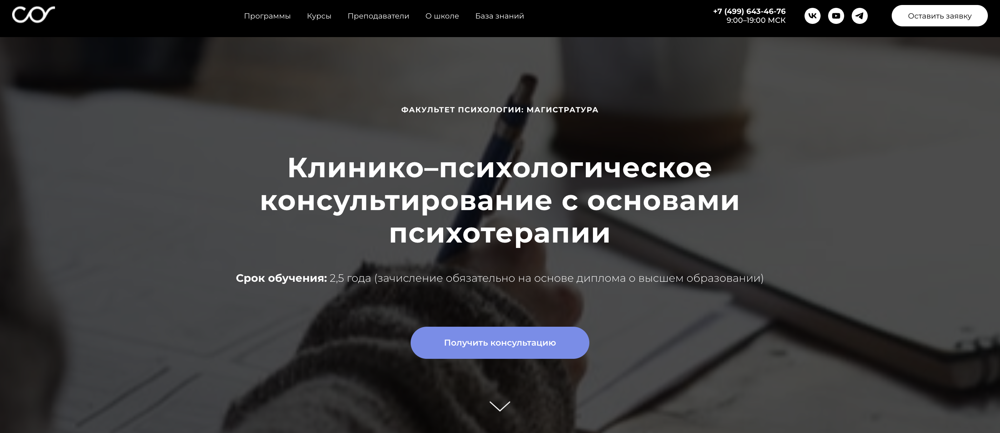
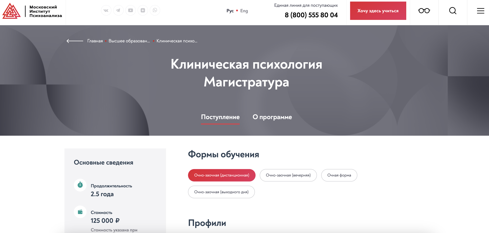
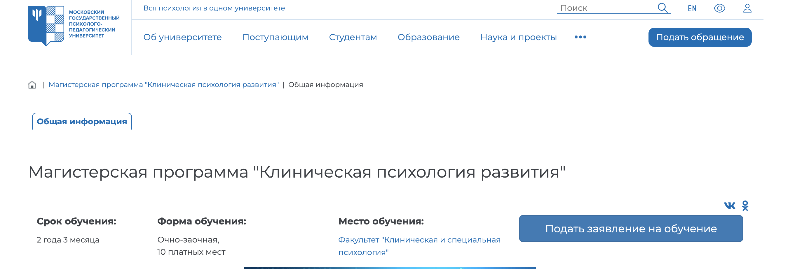

Магистратура по клинической психологии — это возможность для специалистов с высшим образованием получить углубленные знания в области диагностики, консультирования и психотерапии. Выпускники таких программ становятся клиническими психологами и могут работать в медицинских учреждениях, психологических центрах, социальных службах и образовательных организациях. С учетом роста популярности дистанционного обучения мы подготовили рейтинг ТОП-4 магистратур по клинической психологии с онлайн-форматом и дипломом магистра. Эти программы позволяют студентам совмещать учебу с работой, осваивать методы психологической диагностики и консультирования, а также развивать практические навыки, необходимые для профессиональной деятельности.
Топ дистанционных магистратур по клинической психологии
- Клинико-психологическое консультирование с основами психотерапии — Среда обучения и Московский институт психоанализа
- Клиническая психология – Московский институт психоанализа
- Консультативная и клиническая психология — Московский международный университет
- Клиническая психология развития — Московский государственный психолого-педагогический университет
✅ Вам может быть интересно 👉 ТОП онлайн-институтов с магистерскими программами по психологии
- Онлайн-магистратура "Психология управления" — Онлайн-институт Smart
- Коучинг и психологическое консультирование — MITM
- Магистратура по психологии — Среда обучения
Рассмотрим дистанционные магистерские программы по клинической психологии подробнее.
Клинико-психологическое консультирование с основами психотерапии — Среда обучения и Московский институт психоанализа

✅ Официальный сайт: sredaobuchenia.ru
Особенности курса:
Программа нацелена на подготовку квалифицированных специалистов в области клинической психологии. Студенты обучаются в дистанционном формате, что обеспечивает гибкость в совмещении учебы и работы. Большое внимание уделяется практическим навыкам, необходимым для работы с различными возрастными группами и их психологическими проблемами.
Преимущества:
- Качественное образование с дипломом государственного образца
- Обучение проходит под руководством ведущих преподавателей и практиков
- Гибкий график и возможность пересматривать записи занятий
- Доступ к онлайн-библиотеке с необходимыми учебными материалами
- Формат дистанционного обучения, удобный для студентов
- Подготовка по широкому спектру направлений в области клинической психологии
Клиническая психология – Московский институт психоанализа

✅ Официальный сайт: inpsycho.ru
Особенности курса:
Магистерская программа в области клинической психологии предлагает студентам возможность освоить разнообразные направления и профили, такие как нейро- и патопсихология, а также консультативная психология. Обучение сочетает теоретические знания и практические навыки, что позволяет выпускникам успешно работать с клиентами в различных сферах. Кроме того, применяются современные методы поддержки и реабилитации в условиях кризисных состояний.
Преимущества:
- Гибкие формы обучения: очная, очно-заочная и дистанционная.
- Преподавание от опытных специалистов с высокой квалификацией.
- Доступ к уникальным образовательным программам и современным методам диагностики.
- Возможность научной работы и участия в исследованиях в области психологии.
- Подготовка к профессиональной деятельности в клинической сфере.
- Поддержка в трудоустройстве выпускников и обмен опытом с профессиональными психологами.
Консультатианя и клиническая психология — Московский международный университет

✅ Официальный сайт: mi.university
Особенности курса:
Программа магистратуры по психологии направлена на подготовку специалистов в области клинической и консультативной психологии. Студенты смогут овладеть практическими навыками в психологическом консультировании и научных исследованиях. Обучение включает разнообразные формы, такие как бинарные лекции и мастер-классы с практикующими психологами, что обеспечивает глубокую проработку тем.
Преимущества:
- Диплом государственного образца по окончании программы.
- Очно-заочная форма обучения, позволяющая совмещать учебу с работой.
- Высококвалифицированные преподаватели с опытом практической деятельности.
- Участие в научно-практических конференциях и публикация научных работ.
- Возможность изучения актуальных тем в области психологии.
Клиническая психология развития — Московский государственный психолого-педагогический университет

✅ Официальный сайт: mgppu.ru
Особенности курса:
Магистерская программа предлагает обучение по модульной системе, включающей как теоретическую часть, так и практику. Студенты получают возможность совмещать учебу с работой и проходят интенсивную практическую подготовку. Программа направлена на подготовку специалистов в области клинической психологии с акцентом на исследования и практическую деятельность в социальной и консультативной психологии.
Преимущества:
- Диплом магистра государственного образца открывает новые карьерные перспективы.
- Высокий процент трудоустройства выпускников в сфере образовательных и медицинских учреждений.
- Широкие возможности для профессионального роста и специализации в различных направлениях.
- Интенсивная практика позволяет приобрести необходимые навыки для работы с клиентами и решения психологических проблем.
- Совмещение обучения с работой способствует накоплению практического опыта.
Что такое магистратура клинической психологии?
Магистратура клинической психологии — это образовательная программа, которая готовит специалистов в области клинической психологии. В процессе обучения студенты изучают методы психологической диагностики, основы психологической науки и различные аспекты практического консультирования, получая диплом магистра и возможность работать в социальных сферах и медицинских учреждениях.
Какие направления подготовки доступны в магистратуре клинической психологии?
Программы магистратуры клинической психологии предлагают различные направления подготовки, включая консультативную психологию, социальную психологию и психологию кризисных состояний. Это позволяет студентам выбрать специализацию, соответствующую их интересам и карьерным целям.
Каковы требования для поступления в магистратуру клинической психологии?
Для поступления на магистерскую программу клинической психологии обычно требуется диплом бакалавра по психологии или смежной специальности. Абитуриенты часто проходят конкурсный отбор, включая собеседования и тестирования.
Что включает в себя программа магистратуры клинической психологии?
Программа магистратуры включает теоретические и практические занятия, где студенты изучают современные методы психологической диагностики, теорию психологии личности и практические навыки, необходимые для работы с клиентами в различных сферах.
Как проходит практика в магистратуре клинической психологии?
Практическая подготовка студентов включает стажировку в психологических центрах, клиниках и других учреждениях, где они могут применять полученные знания и навыки в реальных условиях, проходя профессиональную деятельность под руководством опытных психологов.
Что такое диплом магистра в области клинической психологии?
Диплом магистра является документом, подтверждающим завершение магистерской программы. Выпускники имеют право работать психологами, консультантами и специалистами в области клинической психологии, предоставляя психологическую помощь и поддержку различным категориям клиентов.
Каковы перспективы трудоустройства для выпускников магистратуры клинической психологии?
Выпускники магистратуры клинической психологии могут работать в медицинских и социальных учреждениях, психологических центрах, а также заниматься частной практикой. Профессиональное образование позволяет им успешно разрабатывать и внедрять программы психологического консультирования и терапии.
Какие навыки и знания получают студенты в магистратуре?
Студенты развивают профессиональные навыки в области диагностики и психотерапии, усиливают свои знания в прикладной психологии, а также обучаются методам психологической помощи, что позволяет им стать квалифицированными специалистами в области клинической психологии.
Какие специализированные курсы можно пройти в магистратуре?
В процессе обучения студенты могут выбрать специализированные курсы, такие как психология кризисных состояний, семейное консультирование, а также различные направления прикладной психологии, что расширяет их карьерные возможности.
Что такое дистанционное обучение в магистратуре клинической психологии?
Дистанционное обучение в магистратуре клинической психологии позволяет студентам осваивать программу без необходимости посещать занятия в университете. Это подходит для тех, кто хочет совмещать обучение с работой или личными обстоятельствами.
Каковы основные цели магистратуры клинической психологии?
Основные цели магистратуры клинической психологии включают подготовку специалистов, способных проводить психологическую диагностику, оказывать психологическую помощь и внедрять эффективные методы психологического консультирования в различных сферах жизни.
Как выбрать подходящий вуз для обучения в магистратуре клинической психологии?
Выбор вуза нужно основывать на репутации учреждения, доступности образовательных программ, квалификации преподавателей и наличии практических баз для стажировок. Также важно обратить внимание на отзывы выпускников и программы, предлагаемые факультетом психологии.
Какие научные исследования проводятся в области клинической психологии?
Научные исследования в клинической психологии охватывают изучение психологических проблем, кризисных состояний и разработку новых методов терапии. Эти исследования помогают улучшить практическую работу специалистов и способствуют развитию психологической науки.
Как проходит процесс получения диплома о высшем образовании в области клинической психологии?
Для получения диплома о высшем образовании студенты должны успешно завершить все курсы, пройти практику и защитить дипломную работу, что подразумевает проведение самостоятельного психологического исследования или проекта.
Каковы этапы окончания программы магистратуры клинической психологии?
Окончание программы включает успешное усвоение учебного материала, прохождение практики и защиту дипломной работы. После этого выпускники получают дипломы государственного образца, который позволяет им работать по специальности.
------------------------------------------------
Реклама. Информация о рекламодателе по ссылкам в статье.